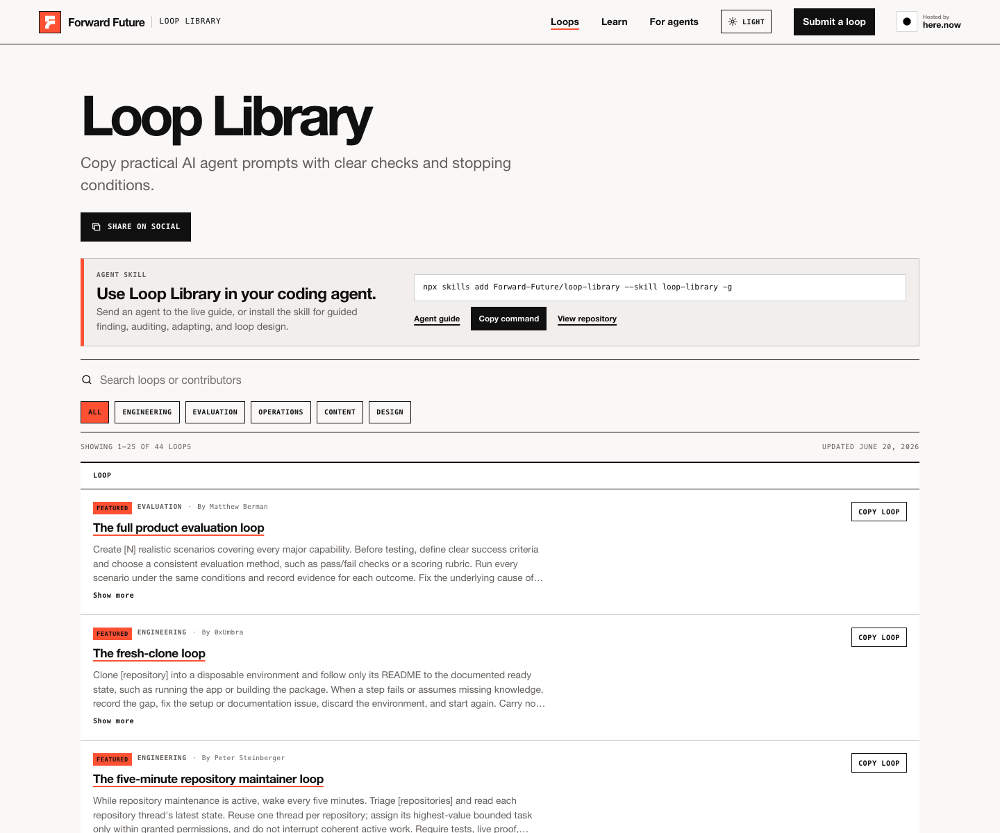

AI 에이전트를 잘 쓰는 사람과 못 쓰는 사람의 차이는 프롬프트 문장력보다 반복 구조를 설계하느냐에 있음.
한 번 물어보고 끝내는 챗봇식 사용은 이제 한계가 뚜렷함. 코드베이스를 고치든, 제품을 평가하든, 문서를 정리하든, 실제 일은 대부분 한 번에 끝나지 않음. 확인하고, 고치고, 다시 확인하고, 기준을 넘으면 멈춰야 함. 이 반복 단위를 잘 만든 것이 에이전트 워크플로우의 핵심임.
Matthew Berman이 X에 올린 말처럼, Forward Future가 막 공개한 Loop Library는 바로 이 반복 단위를 모아둔 라이브러리임. “지금 바로 쓸 수 있는 agent loop의 curated list”라는 설명 그대로임.

Loop Library가 뭔가
Loop Library는 AI 에이전트에게 맡길 수 있는 반복형 작업 프롬프트 모음임. 사이트 첫 문장은 이렇게 정리한다.
Copy practical AI agent prompts with clear checks and stopping conditions.
핵심은 두 단어임. checks와 stopping conditions.
좋은 에이전트 프롬프트는 “이거 해줘”가 아니라 다음 네 가지를 같이 줌.
- 언제 이 루프를 쓰는지
- 어떤 순서로 반복할지
- 매 반복마다 무엇을 검증할지
- 언제 멈출지
Loop Library는 이 네 가지가 들어간 루프들을 Engineering, Evaluation, Operations, Content, Design 같은 카테고리로 정리해둠. 2026년 6월 20일 기준 44개 루프가 올라와 있음.
왜 지금 중요한가
에이전트가 길게 일할 수 있게 되면서 문제는 “할 수 있느냐”에서 “어떻게 안전하게 반복시키느냐”로 바뀌고 있음.
예전 자동화는 보통 단일 명령이었음.
- 테스트 돌려줘
- 문서 업데이트해줘
- 로그에서 에러 찾아줘
- PR 만들어줘
하지만 실제로는 여기서 끝나지 않음. 테스트가 깨지면 원인을 찾아야 하고, 고치면 다시 테스트해야 하고, 문서를 바꾸면 코드와 맞는지 확인해야 하고, PR은 독립 검토까지 거쳐야 함. 즉 업무는 대부분 루프임.
Loop Library의 가치는 이 반복을 프롬프트 안에 명시한다는 점임. 에이전트가 중간에 “대충 된 것 같다”고 멈추지 않도록, 매번 증거를 남기고 기준을 통과할 때만 종료하게 만드는 구조임.
예시 1: Full Product Evaluation Loop
대표 루프 중 하나가 The full product evaluation loop임.
이 루프는 제품 전체 기능을 평가할 때 씀. 핵심 절차는 이렇다.
- 제품의 주요 기능을 전부 나열한다
- 각 기능별 성공 기준과 평가 방식을 정한다
- 현실적인 시나리오 N개를 만든다
- 같은 조건에서 전부 실행하고 증거를 남긴다
- 기준을 못 넘은 시나리오는 원인을 고치고 회귀 테스트를 추가한다
- 수정된 시나리오만 다시 보는 게 아니라, 마지막에 전체 세트를 다시 돌린다
여기서 중요한 건 마지막 단계임. 한 기능을 고치면서 다른 기능을 망가뜨리는 일이 흔하기 때문임. 그래서 “부분 재검증”이 아니라 “최종 전체 재검증”을 종료 조건으로 둔다.
이건 에이전트 평가뿐 아니라 SaaS QA, 앱 릴리스, 내부 도구 점검에도 그대로 쓸 수 있음.
예시 2: Architecture Satisfaction Loop
또 하나 눈에 띄는 건 The architecture satisfaction loop임.
이 루프는 큰 리팩터링을 한 번에 밀어붙이지 말고, 작은 검증 단위로 쪼개라고 말함.
절차는 단순함.
- 목표 아키텍처와 제약 조건, 현재 위험을 먼저 적는다
- 의미 있는 변경을 하나만 한다
- 영향받은 동작을 실제로 테스트한다
- 독립 리뷰를 돌린다
- 검증된 체크포인트마다 커밋한다
- 진행 파일에 결정, 블로커, 다음 액션을 남긴다
이 루프의 포인트는 “만족할 때까지 리팩터링”이라는 애매한 목표를 검증 가능한 체크포인트로 바꾸는 것임. 만족의 기준을 모듈 경계, 의존 방향, 테스트 통과, 성능 기준 같은 형태로 먼저 정해두지 않으면 에이전트 리팩터링은 끝없이 커질 수 있음.
예시 3: Docs Sweep, Production Error Sweep, SEO/GEO Loop
목록을 보면 개발팀에서 바로 쓸 수 있는 루프가 많음.
- The docs sweep: 코드베이스와 문서가 실제 구현과 맞는지 훑고, 오래된 문서를 고친 뒤 PR을 연다
- The production error sweep: 프로덕션 로그에서 조치 가능한 에러를 찾고, 원인 추적 → 수정 → 검증까지 반복한다
- The SEO/GEO visibility loop: 검색엔진과 AI 답변 엔진에서 노출이 약한 지점을 찾고, 가장 영향 큰 문제부터 고친 뒤 다시 벤치마크한다
- The test-suite speed loop: 테스트 신뢰도를 낮추지 않으면서 실행 시간을 줄인다
- The nightly changelog loop: 전날의 의미 있는 변경을 정리해 changelog를 최신 상태로 유지한다
여기서 공통점은 하나임. “작업”이 아니라 운영 습관에 가깝다는 것. 사람이 매주 해야 하지만 자주 밀리는 일들을 에이전트 루프로 바꾸는 방향임.
좋은 루프의 조건
Loop Library를 보면서 정리되는 좋은 에이전트 루프의 조건은 다섯 가지임.
1. 입력 범위가 명확해야 함
“코드 좀 개선해줘”는 위험함. 대신 “프로덕션 로그에서 조치 가능한 에러만 찾고, 재현 가능한 것만 고쳐라”처럼 범위를 좁혀야 함.
2. 검증 방법이 있어야 함
테스트, 빌드, 린트, 벤치마크, 스크린샷, 로그 비교, 독립 리뷰 등 무엇이든 좋음. 중요한 건 에이전트가 자기 말만 믿고 끝내지 않게 하는 것임.
3. 중간 산출물이 남아야 함
긴 작업은 끊김. 모델 세션도 끊기고, 사람이 중간에 들어와야 할 수도 있음. 그래서 진행 파일, 체크포인트 커밋, 실패 사례, 벤치마크 결과가 필요함.
4. 멈춤 조건이 있어야 함
에이전트에게 “계속 개선해”라고 하면 비용과 변경 범위가 커짐. “모든 시나리오가 기준을 넘으면 멈춰라”, “재현에 두 번 실패하면 멈추고 보고하라”, “반복 한도에 도달하면 남은 리스크를 남겨라” 같은 종료 조건이 필요함.
5. 권한 경계가 있어야 함
운영 루프일수록 중요함. 프로덕션 데이터 삭제, 고객 메시지 발송, 릴리스 배포 같은 액션은 자동 실행보다 승인 단계를 둬야 함. 좋은 루프는 에이전트가 할 일과 사람이 승인할 일을 분리함.
이걸 어떻게 써야 하나
개발팀이라면 Loop Library를 그대로 복사해서 쓰기보다, 자기 팀의 Definition of Done에 맞게 수정하는 게 좋음.
예를 들어 docs sweep을 쓴다면:
- 문서 위치
- 코드 소스 범위
- PR 템플릿
- 확인해야 할 빌드 명령
- 금지된 변경 범위
- 리뷰어 지정 방식
이런 것들을 팀 환경에 맞게 박아 넣어야 함. 루프는 템플릿이고, 실제 가치는 팀의 검증 규칙과 결합될 때 나옴.
개인 개발자라면 더 단순하게 시작해도 됨.
- 매주 한 번 repository cleanup loop
- 배포 전 full product evaluation loop
- 큰 리팩터링 전 architecture satisfaction loop
- 블로그 운영자는 nightly changelog loop 대신 weekly content update loop
이런 식으로 반복 업무 하나를 골라 루프화하면 됨.
핵심 인사이트
Loop Library가 보여주는 방향은 명확함.
AI 에이전트 시대의 생산성은 “더 긴 프롬프트”가 아니라 더 좋은 반복 프로토콜에서 나옴.
앞으로 팀마다 필요한 것은 프롬프트 모음집보다 루프 모음집에 가까워질 가능성이 큼. 코드 리뷰 루프, 장애 대응 루프, 고객 문의 분석 루프, 릴리스 노트 루프, 연구 논문 검토 루프. 반복되는 지식노동은 전부 루프가 될 수 있음.
그리고 좋은 루프는 에이전트를 더 자율적으로 만들면서도 더 안전하게 만듦. 왜냐하면 자율성의 반대말은 통제가 아니라 검증 없는 자율성이기 때문임.
Loop Library는 그 검증 구조를 프롬프트 수준에서 표준화하려는 시도임. 지금은 44개 루프의 작은 라이브러리지만, 방향은 꽤 큼. 에이전트를 “똑똑한 답변기”가 아니라 “반복 가능한 작업자”로 쓰려면, 이런 루프 설계가 기본 문법이 될 가능성이 높음.
링크
- Loop Library: https://signals.forwardfuture.ai/loop-library/
- Matthew Berman launch post: https://x.com/MatthewBerman/status/2067682870009925736